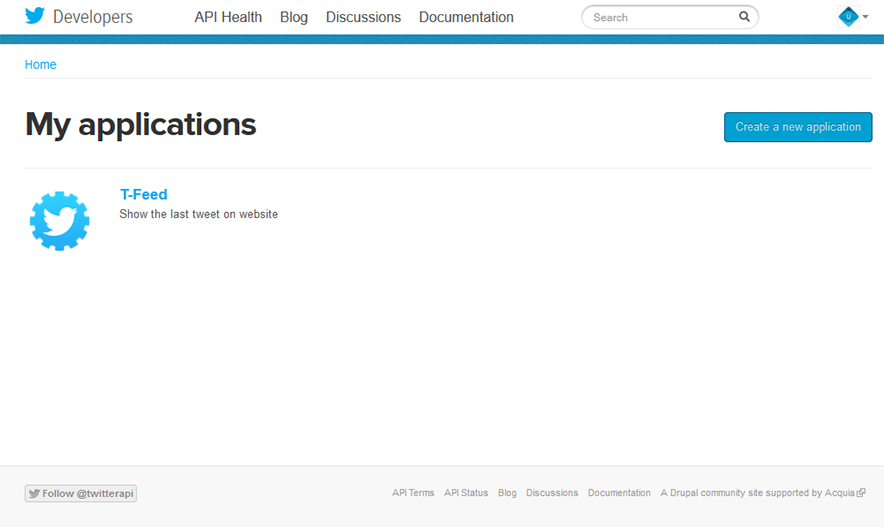
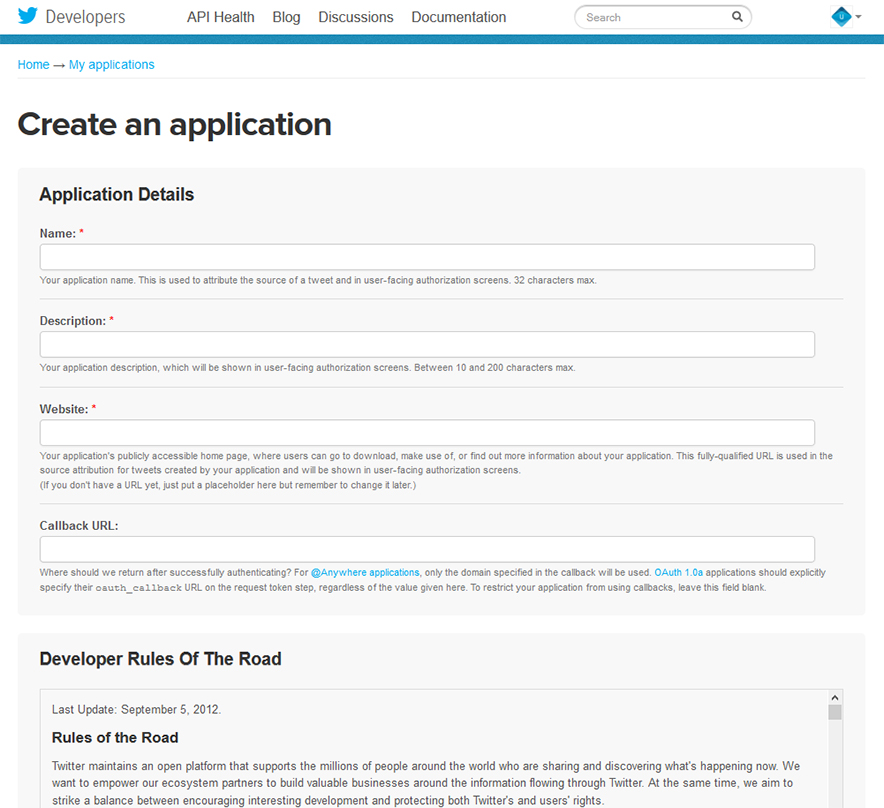
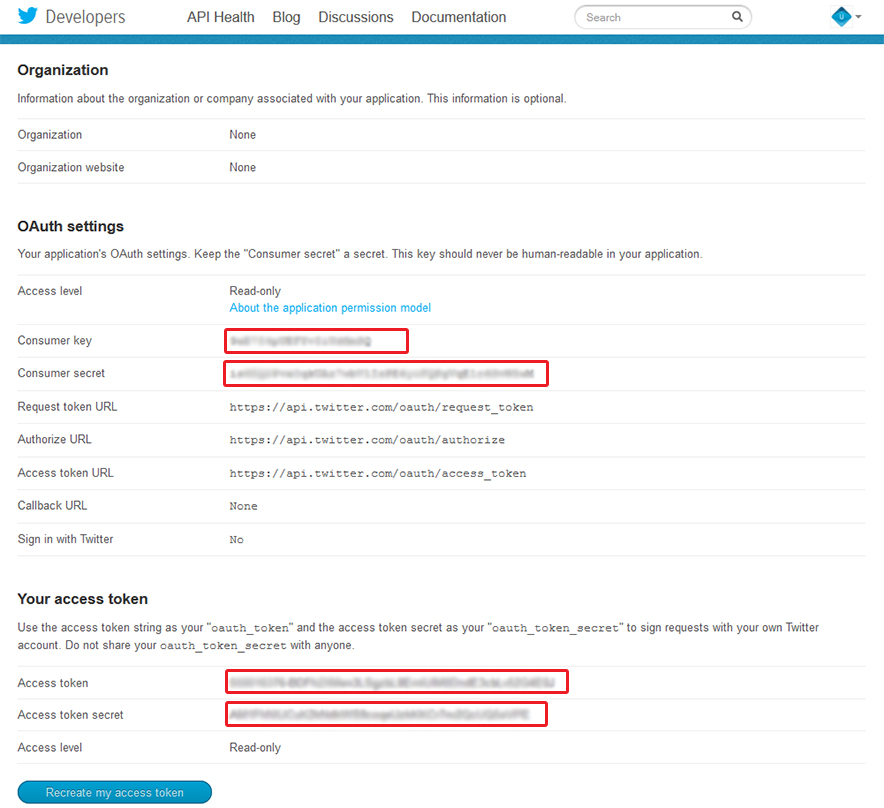

Thank you for purchasing my template. If you have any questions that are beyond the scope of this help file, please feel free to email via my user page contact form here. Thanks so much!
This theme is a responsive layout. All of the content area is nested within sections. Here are the list of each section:
Every file have many comments within HTML code explaining it’s role part by part. Additionally every part of the code is marked by :
<!--name content start -->" and "<!--name content end -->" or <!--/.class or id content-->
comments, e.g:
<!--TEXT WITH DARK BG START--> <section class="bg-dark bg1"> <div class="dark-mask"></div> <div class="container align-center"> <h2 class="slogan">Success is a journey, not a destination. The doing is often more important than the outcome.</h2> <div class="slogan-divider"><span class="line-left"></span><span class="fa fa-quote-left"></span><span class="line-right"></span></div> <h3 class="author-slogan">Arthur Ashe</h3> </div><!--/.container--> </section><!--/.bg-dark--> <!--TEXT WITH DARK BG END-->
This theme/template use some css for styling. Here are the list of the css and explanation:
Those files contain all of the specific stylings for the page.
This file is separated into sections using:
/* -- Header Section ---*/ some code /*-----Header Section end---/ /* ----Main Section ---*/ some code /*-----Main Section end----*/ /* ----Sidebar Section ---*/ some code /* ---- Footer ---*/ some code etc, etc.
If you would like to edit a specific section of the site, simply find the appropriate label in the CSS file, and then scroll down until you find the appropriate style that needs to be edited.
This theme/template use some javascript/jquery plugin.
This theme imports three type of Javascript files.
//Script something start... //some explanation...
Keep every imagefor same content in same ratio width and height. eg: image1 width:100px height:50px , image2 width:200px height:100px , etc....
You can simply add any icon you want by putting this code <i class="fa fa-your-class-icon"></i>
You can check this page for find the icon that you need
The slider is using supesized slider plugin. You can set the slider in script.js. Find this code about line 1:
//slideshow background setting
jQuery(function ($) {
$.supersized({
// Functionality
slide_interval: 7000, // Length between transitions
transition: 1, // 0-None, 1-Fade, 2-Slide Top, 3-Slide Right, 4-Slide Bottom, 5-Slide Left, 6-Carousel Right, 7-Carousel Left
transition_speed: 600, // Speed of transition
// Components
slide_links: 'false', // Individual links for each slide (Options: false, 'num', 'name', 'blank')
slides: [ // Slideshow Images
{
image: 'images/slider1.jpg',
title: ' <h2>Love & Passionate <br> for What We Do</h2>'
}, {
image: 'images/slider2.jpg',
title: ' <h2>Design Wise <br> Simple & Amazing</h2>'
}, {
image: 'images/slider3.jpg',
title: '<h2>Integrity & Loyal <br> for Customer</h2>'
}, {
image: 'images/slider4.jpg',
title: '<h2>Bunch of Creative <br> People & Idea</h2>'
}
]
});
});
For further explanation about this, you can check this page
The video background is using bigvideo plugin. And you should host your own video for this or you have directlink for the video. You can open the script-video.js to set this video. Its about line 206:
//video background setting
var BV = new $.BigVideo();
BV.init();
if (Modernizr.touch) {
BV.show('images/slider1.jpg');
} else {
BV.show('brittany.mp4',{ambient:true});
}
For further explanation about this, you can visit the plugin site here
Portfolio section is inside section within id of "portfolio". This portfolio is using ajax function to open the explanation content. You should connect the explanation html link inside the "data-link" inside the class of "more" and "cat-icon fa fa-html5". Here are the example code:
for "more" class
<a class="more" data-link="work1.html" href="#">
for "cat-icon fa fa-html5" class
<i class="cat-icon fa fa-html5" data-link="work1.html"></i>
as you can see those two class is connected to portfolio page "work1.html". You can change the "data-link" for each class to connected to your portfolio explanation html files.
For setting the slider/video or even the jquery behavior in portfolio explanation you can open the portfolio.js in js folder
Team member section is inside div id "team" inside section class "about". Its using same function like the portfolio section. Its using class "bwWrapper team-ajax" to connect the eteam explanation. Here are the example code
<a class="bwWrapper team-ajax" data-link="team1.html" href="#">
For setting the slider/video or even the jquery behavior in team explanation you can open the team.js in js folder
Each section tab is using bootstrap tab function. You can view the detail explanation in here
If you want to insert video or image hyperlink with lightbox dont forget to add data-rel="pretty-Photo" inside the code.
This is example code:
<a href="images/project/4.jpg" data-rel="prettyPhoto"> <img src="images/project/4.jpg" alt="Project name" /> </a>
You can view this page for further explanation.
Remember, this plugin only work in host that support php, if you want see it locally use program like xampp/wampp.
First you need to go to the Developers website of Twitter.
Go to https://dev.twitter.com/

Login with your Twitter account and go to My Applications.
From there click on the “Create a new application” button.
Fill the form with the information required.

Once you’re done, you’ll be presented with a page like this:

You’ll need four Keys from that page.
- Consumer Key
- Consumer Secret
- Access Token
- Access Token Secret
Insert those information in index.php inside twitter folder its about line 23
class ezTweet {
/*************************************** config ***************************************/
// Your Twitter App Consumer Key
private $consumer_key = 'YOUR_CONSUMER_KEY';
// Your Twitter App Consumer Secret
private $consumer_secret = 'YOUR_CONSUMER_SECRET';
// Your Twitter App Access Token
private $user_token = 'YOUR_ACCESS_TOKEN';
// Your Twitter App Access Token Secret
private $user_secret = 'YOUR_ACCESS_TOKEN_SECRET';
then open script.js for slider homepage or script-video.js for video homepage find this code
//twitter
jQuery(function($){
$("#rrt").tweet({
username: "envato",
modpath: 'twitter/',
page: 1,
avatar_size: 32,
count: 10,
loading_text: "loading ..."
})
});
change envato to your twitter username
for further explanation for this you can check this page
for setting the ticker/sliding twitter find this code
//ticker twitter setting
$(document).ready(function(){
$(this).find(".tweet_list").list_ticker({
speed:10000,
effect:'fade'
})
})
change the speed/fade with your desire. For further explanation you can check this page
Be sure your host is support php files.
You can open contact.php in main folder ,contact.js in js folder for setting contact section.
There is comment in files for explanation.
Its inside unordered list within class of "testimonial". Its used jquery ticker.
and in script.js for slider homepage or script-video.js for video homepage find this code:
//testimonial carousel setting
$(".testimonial").list_ticker({
speed: 5000,
effect: 'fade'
});
change the speed/fade with your desire. For further explanation you can check this page
You can setting based on you location in script.js for slider homepage or script-video.js for video homepage . Find this code:
//google map
$(window).bind("load", function () {
demo.add(function () {
$('#map_canvas').gmap({
'center': '-6.94010,107.62575',
'zoom': 15,
scrollwheel: false,
'disableDefaultUI': false,
'styles': [{
stylers: [{
lightness: 7
}, {
saturation: -100
}]
}],
'callback': function () {
var self = this;
self.addMarker({
'position': this.get('map').getCenter(),
icon: 'images/office-building.png',
}).click(function () {
self.openInfoWindow({
'content': 'Visit Us <br> Address: 11231 Buah Batu Bandung <br> Phone: 1233-2324-2324 <br>Email: company-email@email.com'
}, this);
});
}
});
}).load();
});
change "-6.94010,107.62575" with place in google map base on Latitude and Longitude. You can check you Latitude and Longitude in here
"'zoom': 15," is for your zoom setting. You can change the "15" with your own value.
And this is the code for html content inside the marker(when you click the marker)
self.openInfoWindow({ 'content': 'Visit Us <br> Address: 11231 Buah Batu, 40298 Bandung <br> Phone: 1233-2324-2324 <br>Email: company-email@email.com' }
Change this code if you want to change the marker picture:
icon: 'images/office-building.png',
For further information you can check this page .
The responsive video is using fitvids plugin. This is the code inside script.js or script-video.js
// Video responsive
$("body").fitVids();
That code mean the responsive video is inside the "body"
for further setting you can check this page
This template is using the following images, icons or other files as listed.
Once again, thank you so much for purchasing this template. As I said at the beginning, I'd be glad to help you if you have any questions relating to this template. No guarantees, but I'll do my best to assist. If you have a more general question relating to the themes on ThemeForest, you might consider visiting the forums and asking your question in the "Item Discussion" section.